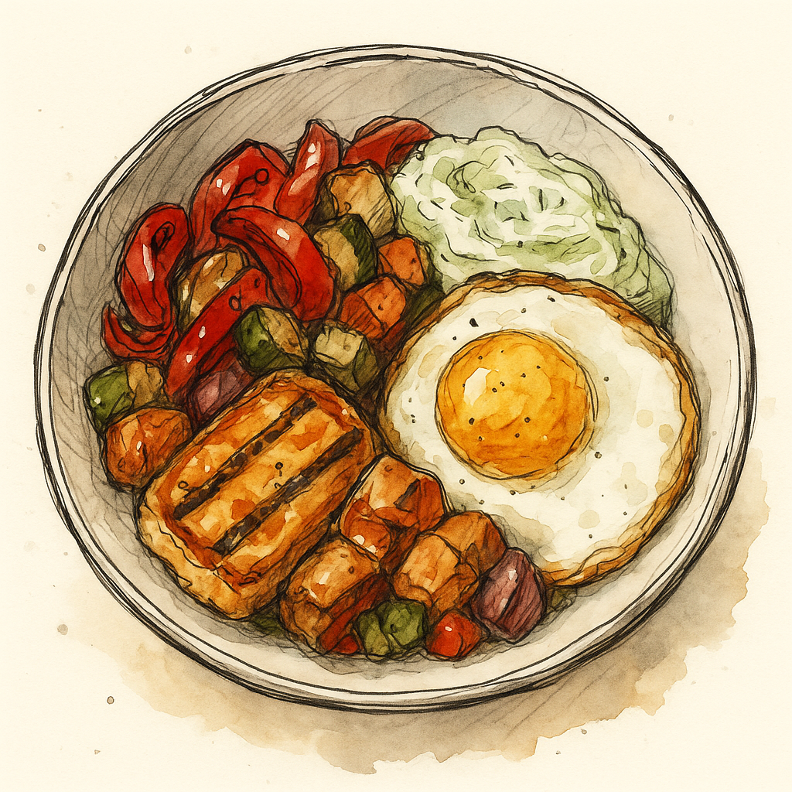

Halloumi Bowl

Description:
A bold, texture-rich dish that layers crisp fried halloumi, caramelized roasted vegetables, golden sourdough croutons, a cooling swipe of tzatziki, and a runny fried egg on top. Ideal as a brunch or dinner centerpiece.
Ingredients (Serves 2):
- 200g halloumi, sliced
- 1 red chilli, sliced
- 1 red pepper, cut into chunks
- 1 courgette, diced
- ½ red onion, sliced
- 2 thick slices sourdough bread, torn into chunks
- Olive oil, salt, black pepper, honey
- 2 eggs
- 4–6 tbsp tzatziki (store-bought or homemade)
Steps
- Roast the veg: Toss pepper, courgette, and red onion with olive oil, salt, and chili flakes if using. Roast at 200°C (400°F) for 25–30 min, tossing halfway.
- Make Croutons: In the last 10–15 min of roasting, toss sourdough with olive oil and bake until golden and crisp.
- Fry the Halloumi: Sear slices in a non-stick or cast-iron pan over medium-high heat until golden on both sides (~2–3 min per side).
- Fry the Eggs: Cook eggs to your preference — sunny side up or with crisp edges and a runny yolk.
- Assemble: Spread tzatziki on a plate, pile on roasted veg and croutons, top with halloumi and fried egg.
Home